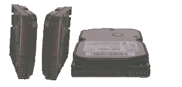
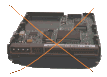

Los avances recientes en capacidad de discos duros nos dejan sin aliento. Hace algunos años, algunos artículos sostenían que las leyes de la física terminarían por limitar la capacidad de los discos duros. El tamaño de las regiones magnetizadas en los materiales ferroeléctricos tiene un tamaño finito, por lo que no se podría reducir indefinidamente. Soprendentemente, los fabricantes han ido encontrando métodos para hacerlas cada vez más pequeñas. Discos de 80 Gb no son nada del otro mundo pero ¿para qué queremos tanto espacio?
La respuesta a esa pregunta es sencilla. ¿Alguna vez has comprobado el tamaño de un ejecutable llamado netscape? 14 Mb para la versión 4.7X, y continúa creciendo. Netscape 6 es taaan grande y lento que sólo funciona con velocidad aceptable en hardware muy reciente. ¿Para qué necesitamos un lector de news, de correo, java, etc. en un solo gran ejecutable? Uno actualiza a la nueva versión con la esperanza de evitar bugs y de paso consigue un nuevo lector de correo. Y donde el viejo funcionaba perfectamente, el nuevo no lo hace.
¿Qué ha sido de aquellos ingenieros de software cualificados que escribían estables, pequeñas y rápidas aplicaciones?
Gnome se ha dado cuenta de esto y ha armado un buen jaleo con el anuncio de su nuevo modelo de componentes Bonobo. KDE no ha hecho tanto ruido, sino que se ha dedicado a implementarlo y con un poco de suerte KDE 2.0 estará listo en breve. Pero aún así, ¿donde está ese navegador rápido y estable que pueda ejecutarse en mi pentium 200? ¿Son acaso los navegadores de texto como w3m y lynx la única alternativa elegante y estable? Algunos proyectos en curso pretenden conseguir ese navegador. viewml será un navegador para pequeños sistemas embebidos. Usa el motor de rendering del KDE project (kfm), aunque por el momento está en desarrollo y es aún más inestable que netscape 4.7, aunque podría convertirse en un navegador muy agradable. Otra alternativa es galeon, basado en el nuevo motor de mozilla, Gecko. Se encuentra en un estadio realmente preliminar, aunque funciona bastante bien. Eso sí, aún necesitaras ese nuevo disco duro para poder instalar esos 24 Mb de código que no usarás ;-).
 REBOL el rebelde, por Georges Tarbouriech
MagicPoint, por Charles Vidal
Analizando Vector Linux, por Sujan Swearingen
Cómo informar sobre errores en Debian 2.2,
por Egon Willighagen
Bastille-Linux, por Frédéric Raynal
Construyendo un ISP escalable con
software de código abierto,
por Atif Ghaffar
Guía de Instalación de Slackware 7.0. Parte I,
por Jeffry Degrande
Revisión de libros: Professional PHP Programming, por John Perr
REBOL el rebelde, por Georges Tarbouriech
MagicPoint, por Charles Vidal
Analizando Vector Linux, por Sujan Swearingen
Cómo informar sobre errores en Debian 2.2,
por Egon Willighagen
Bastille-Linux, por Frédéric Raynal
Construyendo un ISP escalable con
software de código abierto,
por Atif Ghaffar
Guía de Instalación de Slackware 7.0. Parte I,
por Jeffry Degrande
Revisión de libros: Professional PHP Programming, por John Perr
¿Cómo instalar mi nuevo disco duro? Enchufar los cables no suele ser demasiado difícil, pues suelen estar perfectamente etiquetados y suelen poder encajarse de una sola forma. La mecánica de los discos no esta diseñada para mantener los discos girando en cualquier posición. Desafortunadamente, eso no suele mencionarse en los manuales o separatas que vienen con el disco. Si lo colocas de forma incorrecta, te puedes encontrar con un disco que se funde en un par de meses.
El disco debe colocarse tal y como se muestra en la primera figura,

esto es, o descansando sobre su lado largo y estrecho, o colocado de plano con la placa de circuito impreso hacia _abajo_.
Nunca debería montarse con la parte metálica hacia abajo y el cirtuito impreso hacia arriba:

|
© 1999 LinuxFocus Página de contacto con LinuxFocus |